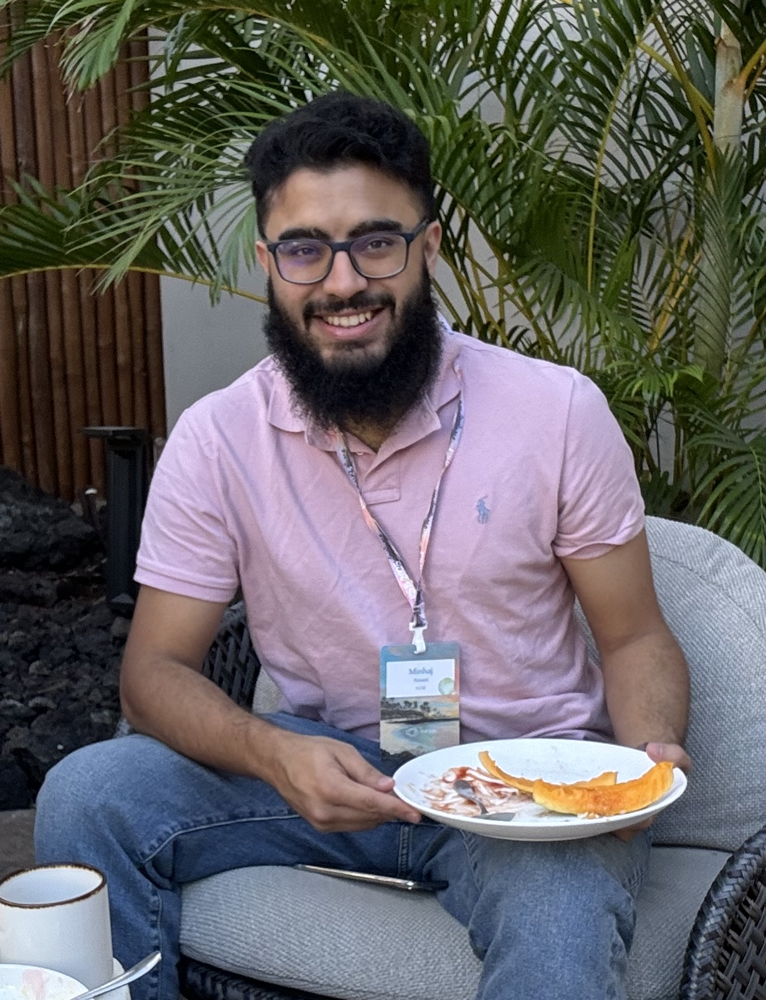

I'm a Data Scientist in the Cardiovascular Research Institute at the UCSF School of Medicine, University of California, San Francisco.
Sarra Harrabi, Yichen Wu, Omar Majwal, Gabriel Asslo, George Azar, Geoffrey H. Tison, Minhaj Ansari, Milos Vukadinovic, David Ouyang, Joshua P. Barrios, Jacques Delfrate & Robert Avram
Minhaj U Ansari*, M.S , Joshua P Barrios*, Ph.D , Lionel Tastet, Ph.D , Rohit Jhawar, B.A , Luca Cristin, M.D , Amy Rich, B.A , Dwight Bibby, R.D.C.S , Qizhi Fang, M.D , Farzin Arya, M.D , Valentina Crudo, M.D , Thuy Nguyen, M.D , Dipan J Shah, M.D , Francesca N Delling, M.D., M.P.H , Geoffrey H Tison, M.D., M.P.H
Joshua P. Barrios, Minhaj U. Ansari, Jeffrey E. Olgin, Sean Abreau, Jacques Delfrate, Elodie L. Langlais, Robert Avram & Geoffrey H. Tison
Alexis Nolin-Lapalme , Achille Sowa , Jacques Delfrate , Olivier Tastet , Denis Corbin , Merve Kulbay , Derman Ozdemir , Marie-Jeanne Noël , François-Christophe Marois-Blanchet , François Harvey , Surbhi Sharma , Minhaj Ansari , I Min Chiu , Valentina D’souza , Sam F Friedman , Michaël Chassé , Brian J Potter , Jonathan Afilalo , Pierre Adil Elias , Gilbert Jabbour , Mourad Bahani , Marie-Pierre Dubé , Patrick M Boyle , Neal A Chatterjee , Joshua Barrios , Geoffrey H Tison , David Ouyang , Mahnaz Maddah , Shaan Khurshid , Julia Cadrin-Tourigny , Rafik Tadros , Julie Hussin , Robert Avram
Fatima Zahra Fawzi, MSc , Istok Menkovic, MD , Nicolas Dostie, MD , Maxime Tremblay-Gravel, MD, MSc , Marie-Claude Parent, MD , Gabriel Asslo, MD , Jean-François Tanguay, MD, PhD , Guillaume Marquis-Gravel, MD, MSc , Minhaj Ansari, MSc , Joshua P Barrios, PhD , Geoffrey H Tison, MD, MPH , Jacques Delfrate, MSc , Robert Avram, MD
River Jiang, Minhaj Ansari, Joshua Barrios, and Geoffrey H. Tison
Tastet Lionel*, Ansari Minhaj*, Barrios Joshua, Cristin Luca, Jhawar Rohit, Rich Amy, Bibby Dwight, Fang Qizhi, Arya Farzin, Tison Geoffrey, Delling Francesca.
Hu Stephanie, Ansari Minhaj, Barrios Joshua, Tison Geoffrey.
Hu Stephanie, Ansari Minhaj, Barrios Joshua, Tison Geoffrey.
Higuchi Satoshi, Li Roland, Gerstenfeld Edward, Liem L., Im Sung, Kalantarian Shadi, Ansari Minhaj, Abreau Sean, Barrios Joshua, Scheinman Melvin, Tison Geoffrey.